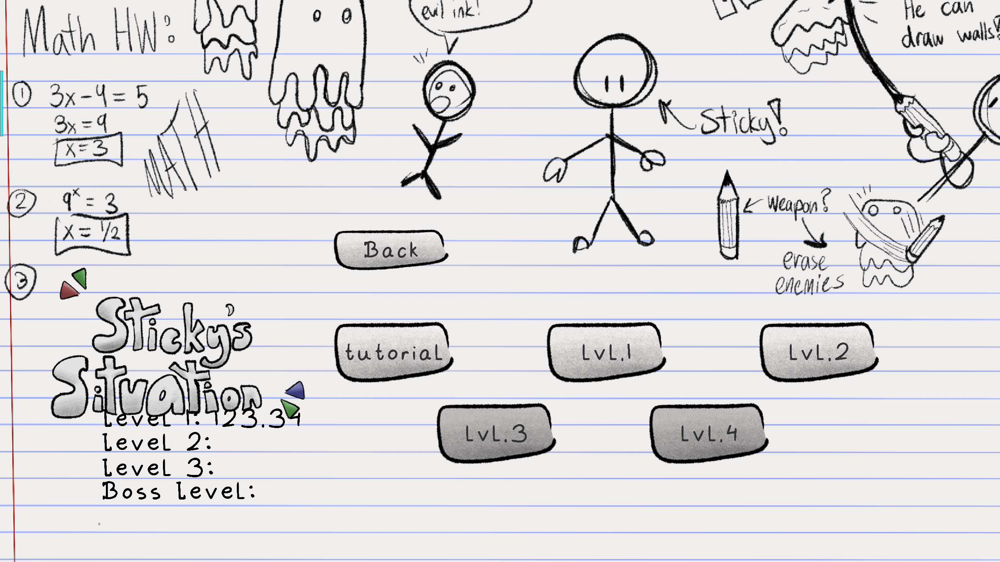

Brave The Storm
Brave the storm is a cozy fishing game where you can catch fish to store in an encyclopedia and do quests for the locals


Development Time: 1 week Team Size: 3 Game Engine: Godot
My Involvement
- Role: Programmer
- Things I did:
- - Implemented fishing mechanics
- - Implemented individual fish classes
- - Implemented quests
- - Implemented dialogue system within the game
- - Designed/implemented main menu and level selection screen
- - Implemented final boss
Retrospective
- I had a lot of fun making this game. When development started, I asked myself how I could make fishing fun for the player. By constantly reminding myself of this question, I was able to implement a fishing system that was fun and satisfying for the player. I did this by mixing the animations with sounds presenting them in an expressive way. One thing I was very proud of was creating the reeling sound effect for fishing by recording myself using a zip tie and adjusting the pitch
- There were a couple of things I would have done differently. The ...
- I felt like the team was on the same wavelength throughout development. We were all excited to make the game, and worked really hard during the entire week of making it. We met in person to work on the game, and had really good communication to make clarifications and systems to work together in the game.